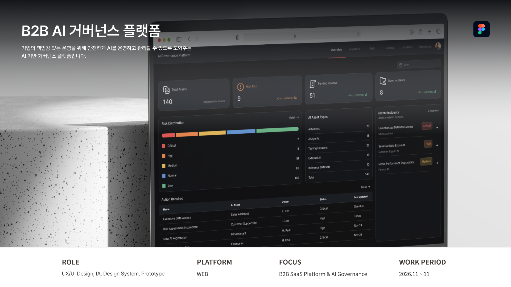

AI거버넌스 플랫폼

프로젝트 개요
프로젝트 목표
AI기술이 확산되면서 함께 중요해진 AI자산, 접근 권한 및 규제 준수 등을 구조화 하여 기업의 효율적인 AI운영을 지원하는 서비스 플랫폼을 목표로 한다.
디자인 목표
복잡한 AI자산 정보를 직관적으로 표현하여 일관된 형태로 구조화하여 군한 대응 및 과정의 추적성을 확보하고 서로다른 기준의 규제사항을 시각적으로 정리하여 업무의 효율성을 높인다.
프로젝트 타입
기업 내 AI자산과 운영 전반의 위험 및 규제 준수 현황을 통합적으로 관리할 수 있는 B2B 플랫폼
프로젝트 유형
B2B SaaS Platform, End-to-End Product Design
제작 방향
기업 내 AI 활용이 증가 됨에 따라 다양한 자산에 대한 관리 필요성이 증가 됨에 따른 위험평가, 접근 권한, 사고대응 및 규제 준수를 통합적으로 관리하고 사용자의 의사결정을 도울 수 있도록 하였습니다.
핵심 화면
평상 시에는 전체 상태를 통합적으로 확인하고 필요 시 관리 중인 AI 자산을 상세하게 확인할 수 있도록 UI/UX를 설계하였습니다.
© 2026 Leesujin. All rights reserved.